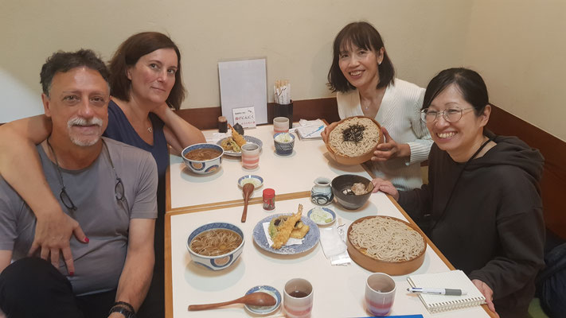
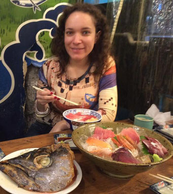

Testimonios
Marcos y Eva
Para nosotros fue un lujo poder contar con la compañía de Akiko, Hiromi, Naoko,
Hiro y Junko!! Nos facilitaron mucho aprender a movernos en metro y ferrocarril,
sobre todo al llegar por primera vez a Tokio, y contar con personas que viven allí
y te enseñan su cuidad y te explican su cultura es maravilloso, y cada día se aprovecha
mucho más y se descubren sitios, que si fuéramos por nuestra cuenta seguramente
no habríamos conocido .De esta manera conociendo al japonés en persona durante
las horas que se comparten haciendo visitas, comiendo...etc, acabas descubriendo
que aunque parecen muy serios, también son muy divertidos!
Les encanta España
como cultura, y los españoles, y al final se coge cariño mutuo!

Salir con los guías de visita-japon por Tokyo, Osaka y Nara
fue una experiencia de mucho aprendizaje sobre Japón y de
forjar lazos de amistad.
Dos guías en Tokyo me llevaron por
Akihabara, Shimbashi y otras zonas al rededor. Pacientemente
me esperaban mientras yo exploraba las tiendas. Su nivel de
español es perfecto! Nunca tuvimos inconvenientes en la
comunicación. Los aprecio mucho!
En Osaka y Nara, mi
gran amiga y guía me introdujo a la vida diaria de los
Osaka-jin y me guió a través de templos y castillos contándome
la historia de estos lugares. Una noche me invitaron a su reunión
de año nuevo, donde conocí otras maravillosas personas que hablan
español y les encanta el intercambio cultural.
Recomiendo totalmente
este servicio, es la mejor forma de conocer el corazón de Japón,
a través de su gente. Japón, el país de los SOLES nacientes.